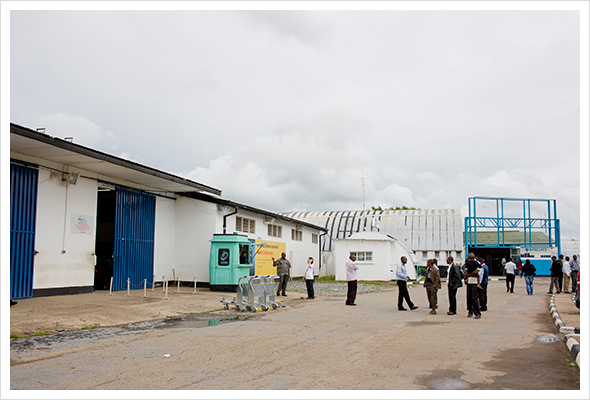
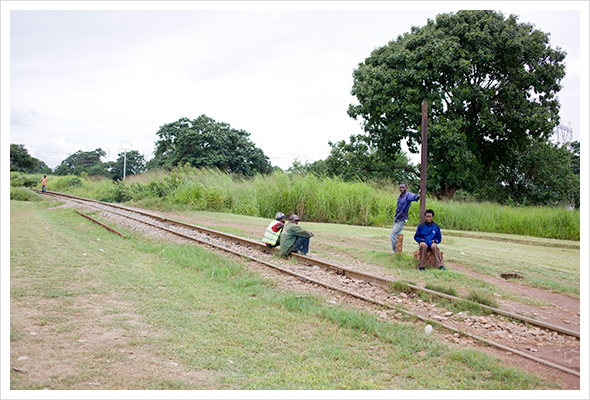
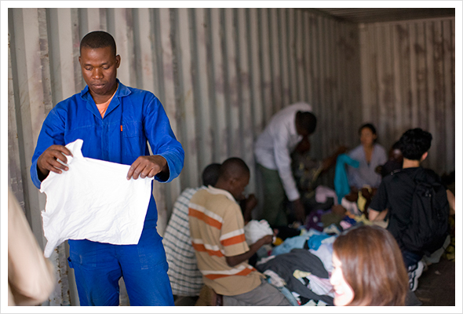
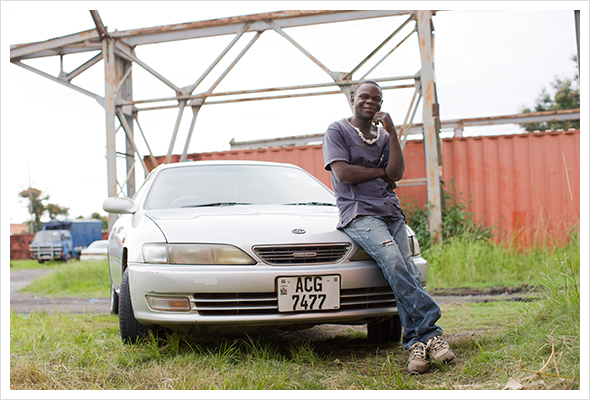
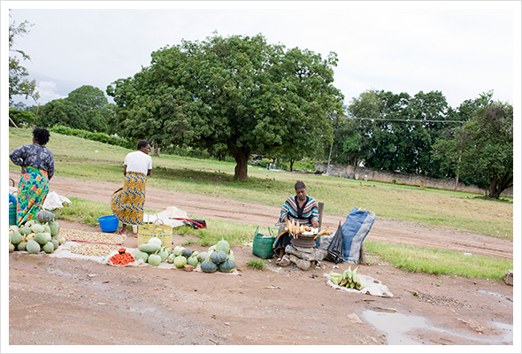
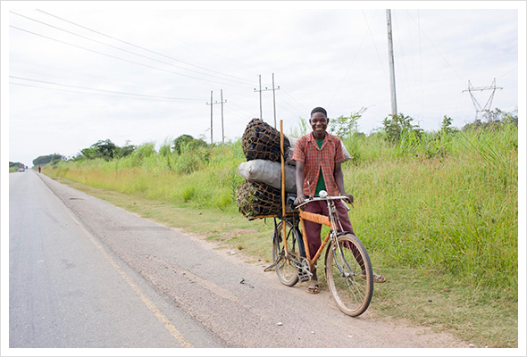
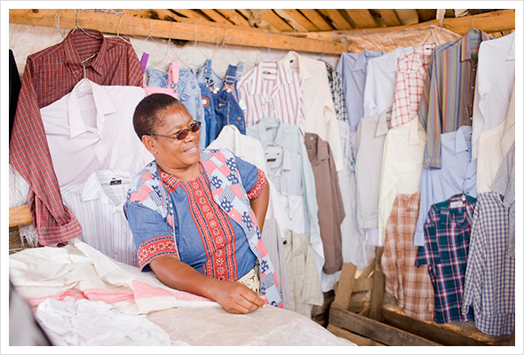
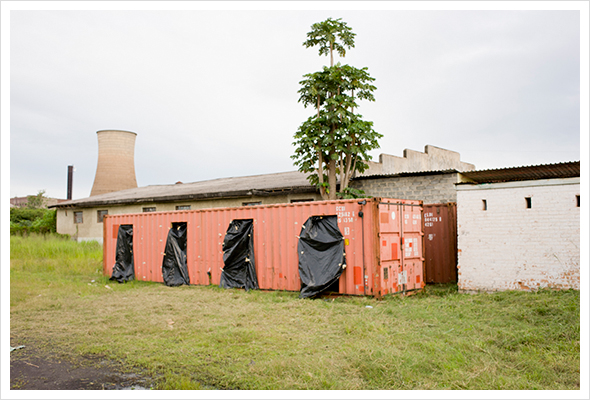
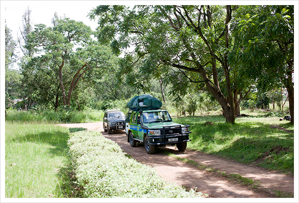

今回の衣服の提供先はザンビア。ザンビアはアフリカ南部に位置する人口1300万人の国。有名なビクトリアフォールが思いつく位で、私たち日本人にはあまり馴染みのない国かもしれない。この国では出産時における赤ちゃんの死亡率は日本の約30倍で、妊産婦の死亡率は138倍だという。その大きな理由の１つは医師に診察してもらうことなく、自宅出産をすることがが多いため。妊産婦に診療をうけてもらうために、診療所で出産してもらうために、服をプレゼントする。
自分や赤ちゃんの様子が気になるから診療所へ行く、ではなく、服がもらえるから診療所へ行く。ちょっと日本ではイメージがしにくいこの仕組みは、いざザンビアに行ってみて、現場を見て回り、いろいろお話を聞いたら、納得、のアイデアでした。なによりも服を受け取った人々の笑顔は説得力のあるもので、服のチカラをあらためて認識させられました。NGO団体JOICEPと組んで行われたザンビアでの衣服の提供をフォトレポートします。
- 
- 01.
- ザンビア第二の都市、ンドラ空港に到着。
南半球なので日本と季節は反対、夏の終わりの雨期。
税関にて、ハンドキャリーの衣服を調べられる。
トラブルなく通過し、ほっとする。
- Photographer
- 上岡伸輔 Shinsuke Kamioka
- デザイン会社撮影部を経て2002年独立。広告関係、雑誌、ファッションカタログなどを中心に幅広く精力的に活躍中。世界40カ国以上を旅して写真を撮る。海外取材のエキスパートでもある。
- 
- 02.
- ンドラは、ザンビアの主要輸出品である銅の採掘地として発展した都市であり、人口37万人。一日数本、銅輸送のために作られた鉄道も通っている。都市といっても、日本に置き換えてイメージするならば小さな町という感じ。
- 
- 03.
- さっそく、JOICEPのザンビアにおけるパートナーである現地NGOのPPAZ（Plan Parenthood Association of Zambia) オフィスにて、今回のスケジュールや内容の確認をする。そして、みんなで衣服の選別作業。きちんと荷物が届いているかを確認し、ベストな渡し方を現地の人と相談しながら仕分けする。今回は赤ちゃん用、お母さん用の服に分けてそれぞれ袋づめ。警備のおじさん、近隣の方々も協力してくれる。翌日も彼らの何人かと会ったけど、みんな同じ服を着ていた。
- 
- 04.
- 街中で日本車を多く見かけた。日本というと車の話になる。
- 
- 05.
- 路上で野菜を売る人々。農村の多くの人々は、自給自足の生活をしていて、余った作物を路上で販売して現金収入を得る。
- 
- 06.
- 炭を市場に売りにいく少年に出会う。電気やガスのインフラが整っていなくて、多くの人は炭で煮炊きをしている。
- 
- 07.
- 地元のマーケットでユーズドの服が売られていた。この女性が店主。最近ビジネスをはじめたばかりだという。畳一畳分くらいのスペースに所狭しとユーズドの服が敷き詰められている。商品はタンザニア国境付近から毎月1回の割合で買い付けているという。ワイシャツ1枚2ドル〜3ドルという。値段は、けっこう高い。服がそう簡単には買えないものなんだ、と実感。

- 08.
- 翌日、ppaz事務所にてユニクロ サスティナビリティ部のシェルバさんがSMAGTシャツを寄贈。SMAGとは、Safe Motherhood Action Groupの略で母子の健康を守るために選ばれた母子保健推進員のことを指す。住民の間では、通称SMAGと呼ばれている。彼らが中心となり、診療所まで遠くて通えない妊産婦たちに出産に関する正しい知識をレクチャーし、コミュニティと保健サービスをつなぐ役割を担う。SMAGメンバーとして住民たちが認識しやすいように今回ユニクロはTシャツを寄贈した。
- 
- 09.
- 物資支援で使われたコンテナを有効活用して作られた出産待機ハウス。診療所から数十キロ離れたところに住む女性たちが安心して安全な出産ができるよう、予定日２週間前に診療所に到着して出産まで寝泊まりするために、待機ハウスを建設することになったという。今はンドラのPPAZの事務所においてあるが、4月には診療所に移動され、完成するという。
- 
- 10.
- 診療所のあるフィアレに移動。ンドラから車で45分。主要道路はコンクリートだが、１本横道に入ると土に代わる。